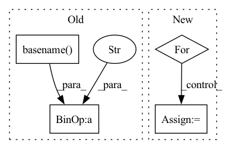

Pattern ID :35715
Before Change
chunk_size = params.chunk_size
if params.log_flag:
print("=========== preprocessing() in " + os.path.basename( __file__) )
split_flag = False
dataset_root_path = data_root_path + dataset_nameAfter Change
chunk_size = preprocess_cfg.chunk_size
dataset_path = dataset_path
manager = multiprocessing.Manager()
for dataset in preprocess_cfg.datasets:
dataset_name = dataset["name"]
if dataset["type"] == "continuous":
preprocess_type = "CONT"
else:
preprocess_type = "DIFF"
face_detect_algorithm = dataset["face_detect_algorithm"]
fixed_position = dataset["fixed_position"]
img_size = dataset["image_size"]In pattern: SUPERPATTERN
Frequency: 3
Non-data size: 4
Instances Fragment ID: 101622541
Project Name: tvs-ai/pytorch_rppgs
Commit Name: d9e5f427ba4ef4e5bceddccc15ee6fa51cb5d5c6
Time: 2023-05-02
Author: spicyyeol@gmail.com
File Name: rppg/preprocessing/dataset_preprocess.py
M Class Name: AnonimousClass
N Class Name: AnonimousClass
M Method Name: preprocessing(3)
N Method Name: preprocessing(0)
M Parent Class:
N Parent Class:
M File Name: rppg/preprocessing/dataset_preprocess.py
N File Name: rppg/preprocessing/dataset_preprocess.py
M Start Line: 31
M End Line: 131
N Start Line: 20
N End Line: 128
Before Change
chunk_size = params.chunk_size
if params.log_flag:
print("=========== preprocessing() in " + os.path.basename( __file__) )
split_flag = False
dataset_root_path = data_root_path + dataset_nameAfter Change
chunk_size = preprocess_cfg.chunk_size
dataset_path = dataset_path
manager = multiprocessing.Manager()
for dataset in preprocess_cfg.datasets:
dataset_name = dataset["name"]
if dataset["type"] == "continuous":
preprocess_type = "CONT"
else:
preprocess_type = "DIFF"
face_detect_algorithm = dataset["face_detect_algorithm"] Fragment ID: 101622538
Project Name: tvs-ai/pytorch_rppgs
Commit Name: d9e5f427ba4ef4e5bceddccc15ee6fa51cb5d5c6
Time: 2023-05-02
Author: spicyyeol@gmail.com
File Name: rppg/preprocessing/dataset_preprocess.py
M Class Name: AnonimousClass
N Class Name: AnonimousClass
M Method Name: preprocessing(3)
N Method Name: preprocessing(0)
M Parent Class:
N Parent Class:
M File Name: rppg/preprocessing/dataset_preprocess.py
N File Name: rppg/preprocessing/dataset_preprocess.py
M Start Line: 31
M End Line: 131
N Start Line: 20
N End Line: 128
Before Change
// outputFilename = "Test.vtk"
if len(present_labels) > 1:
outpath = out_folder + "/VTK files/" + os.path.basename(file_path).split(".")[0] + f"_{NAMES_FROM_LABELS[label]}_model.vtk"
else:
outpath = out_folder + "/VTK files/" + os.path.basename(file_path).split(".")[0] + f"_model.vtk"
if not os.path.exists(os.path.dirname(outpath)):
os.makedirs(os.path.dirname(outpath))After Change
color.SetNumberOfComponents(3)
color.SetNumberOfTuples( model.GetNumberOfCells() )
for i in range(model.GetNumberOfCells()):
color_tup= LABEL_COLORS[label]
color.SetTuple(i, color_tup)
model.GetCellData().SetScalars(color) Fragment ID: 101622536
Project Name: dcbia-ortholab/slicerautomateddentaltools
Commit Name: 8f9e76bd5aa05d66c16f77078dafee469f7a315b
Time: 2022-07-01
Author: max.gillot.69@gmail.com
File Name: AMASSS_CLI/AMASSS_CLI.py
M Class Name: AnonimousClass
N Class Name: AnonimousClass
M Method Name: SavePredToVTK(5)
N Method Name: SavePredToVTK(4)
M Parent Class:
N Parent Class:
M File Name: AMASSS_CLI/AMASSS_CLI.py
N File Name: AMASSS_CLI/AMASSS_CLI.py
M Start Line: 485
M End Line: 546
N Start Line: 521
N End Line: 603
Before Change
annotations = defaultdict(list)
task_dir = osp.dirname(self._path)
anno_files = [s for s in dir_items(task_dir, ".txt")
if s.endswith("_" + osp.basename( self._path) )]
for ann_filename in anno_files:
with open(osp.join(task_dir, ann_filename), encoding="utf-8") as f:
label = ann_filename[:ann_filename.rfind("_")]After Change
def _load_annotations(self):
annotations = {}
task_dir = osp.dirname(self._path)
for label_id, label in enumerate(self._categories[AnnotationType.label]):
ann_file = osp.join(task_dir, f"{label.name}_{self._subset}.txt")
if not osp.isfile(ann_file):
continue
Fragment ID: 101622537
Project Name: openvinotoolkit/datumaro
Commit Name: 4dba6e4eafd99aed88b44908cd9c0e32be0bf272
Time: 2021-10-14
Author: maxim.zhiltsov@intel.com
File Name: datumaro/plugins/voc_format/extractor.py
M Class Name: VocClassificationExtractor
N Class Name: VocClassificationExtractor
M Method Name: _load_annotations(1)
N Method Name: _load_annotations(1)
M Parent Class: _VocExtractor
N Parent Class: _VocExtractor
M File Name: datumaro/plugins/voc_format/extractor.py
N File Name: datumaro/plugins/voc_format/extractor.py
M Start Line: 102
M End Line: 115
N Start Line: 99
N End Line: 112